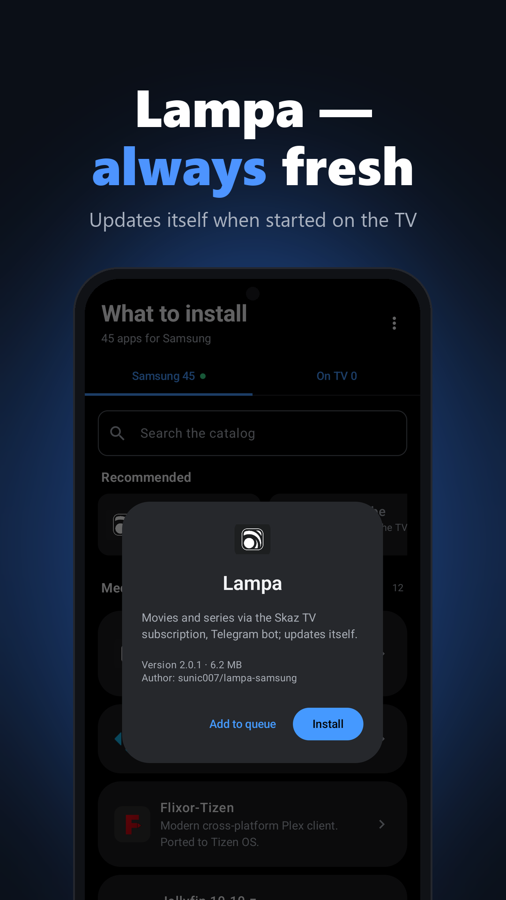
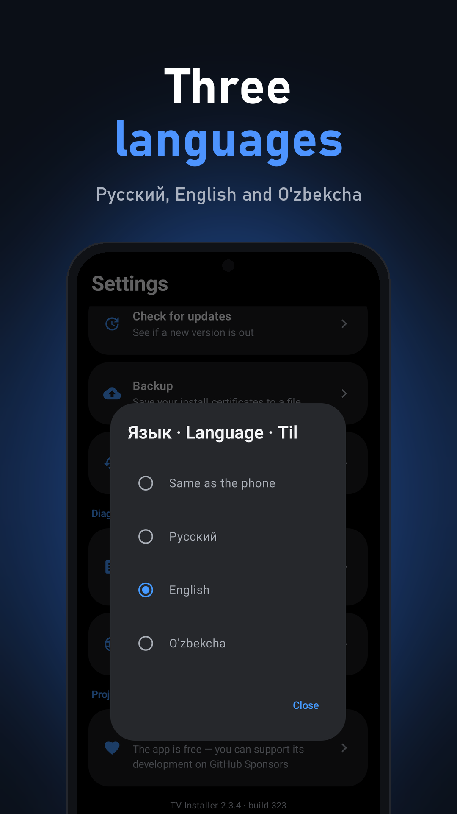

What it does
Any Samsung Tizen TV on the same Wi‑Fi — and you can use several TVs.
Checks Wi‑Fi, the TV, Developer Mode and the address on the TV step by step, and says what to fix.
Sign in with your Samsung account — no PC. A reminder before it expires, one-tap renewal, backup and restore.
Media centers, players, streaming, IPTV, with Recommended picks — or your own .wgt.
Install with every step visible, then “Open on TV”. Open, Remove and “Update all” in the On TV list.
A TV remote in your phone, and turning the TV on over the network (Wake-on-LAN).
Lampa comes from its latest GitHub release; TV Installer updates itself without a browser.
English, Русский and O'zbekcha — follows your phone or pick one.
How to start
- On the TV: Apps → scroll down to App Settings → press
12345→ turn Developer mode on and enter your phone's IP (TV Installer shows it). - Restart the TV (hold the power button ~2 s). After the restart App Settings shows DEVELOP MODE.
- Install SunicTvInstaller.apk on your phone, pick the TV, sign in to Samsung once, choose an app.
Video guide
TV Installer is an independent project, not affiliated with or endorsed by Samsung. Samsung and Tizen are trademarks of Samsung Electronics. The app does not host or provide media content.
По-русски
TV Installer — бесплатное Android-приложение: ставит приложения .wgt на телевизоры Samsung (Tizen)
прямо с телефона, без компьютера и Tizen Studio. Само находит ТВ, получает сертификат Samsung и устанавливает
приложение; видео-инструкция показывает, что нажать на пульте. Мастер «Не подключается?» помогает наладить связь, о продлении
сертификата приложение напомнит само. Каталог из 40+ приложений с подборкой «Рекомендуем», «Обновить всё» и
«Открыть на ТВ» в одно касание, пульт и включение ТВ с телефона. Интерфейс — на русском, английском и узбекском.
Главное приложение каталога — Lampa для Samsung с Telegram-ботом и автообновлением.
⬇ Скачать APKTV Installer — независимый проект, не связан с Samsung и не одобрен ею. Samsung и Tizen — товарные знаки Samsung Electronics. Приложение не хранит и не предоставляет медиаконтент.
O'zbekcha
TV Installer — bepul Android ilova: Samsung (Tizen) televizorlariga .wgt ilovalarni to'g'ridan-to'g'ri
telefondan, kompyuter va Tizen Studio'siz o'rnatadi. Televizorni o'zi topadi, Samsung sertifikatini oladi va ilovani
o'rnatadi. «Ulanmayaptimi?» yordamchisi ulanishni sozlashga yordam beradi, sertifikat muddati tugashidan oldin eslatadi.
40+ ilovali katalog va «Tavsiya etamiz» to'plami, «Hammasini yangilash» va «TV'da ochish» — bir bosishda; pult va
televizorni telefondan yoqish. Interfeys o'zbek, rus va ingliz tillarida.
TV Installer — mustaqil loyiha, Samsung bilan bog'liq emas va u tomonidan tasdiqlanmagan. Samsung va Tizen — Samsung Electronics'ning savdo belgilari. Ilova media kontentni saqlamaydi va taqdim etmaydi.